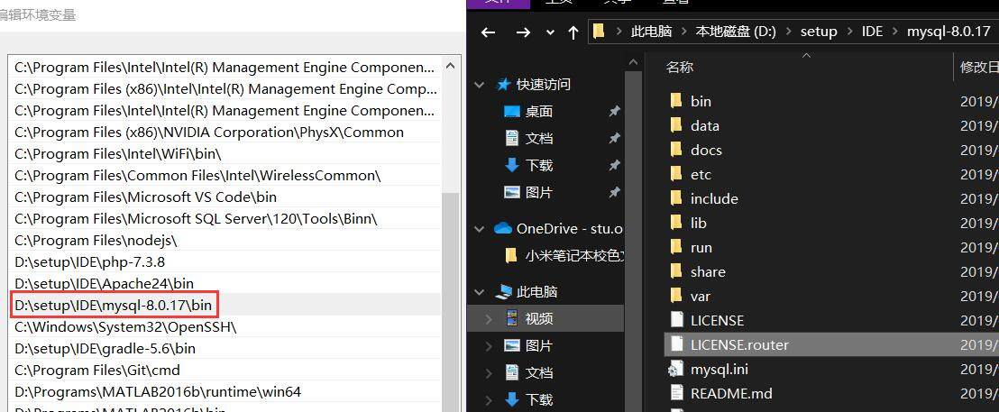

下载地址 选择你的系统版本 No Thanks下载
为了便于操作先将mysql的路径添加到环境变量，比如我的

然后，win+x使用管理员打开命令行，使用如下命令进行初始化，注意记住随机生成的密码（非常复杂的密码）
mysqld --initialize --user=mysql --console
之后,依次输入如下命令，最后要输的密码即刚刚生成的
mysqld -install
net start mysql
mysql -u root -p
首先解压下载下来的tar包
tar -vxf *.tar
进入解压的文件夹会发现一系列deb包，使用如下命令安装，如果第一步成功不需要第二个命令
sudo dpkg -i *.deb //-i install安装deb包
sodo apt --fix-broken install //自动安装缺少的依赖包
期间会提示你设置密码，安装完成之后如果出现Access Denied 在命令前加sudo
ALTER USER root@localhost IDENTIFIED BY '123' //修改root密码为123
ALTER USER 'username'@'host' IDENTIFIED WITH mysql_native_password BY 'yourpassword'; 修改用户密码
DROP USER 'username'@'host'; 删除用户
show databases; 查看数据库
CREATE DATABASE library; 创建数据库library
use library; 使用library数据库
show tables; 查看有哪些表
CREATE TABLE book(name char(20),author char(20));创建book表，有两个栏 name和author，注意 utf-8 编码下一个中文占三个字节，如果你只知道长度，不确定中英文可以使用varchar
实例 Article表
create table article(
`id` int unsigned auto_increment,
`title` varchar(30),
`url` varchar(35),
`creatime` datetime default CURRENT_TIMESTAMP,
`updatime` datetime default CURRENT_TIMESTAMP on update CURRENT_TIMESTAMP,
primary key(id)
);
INSERT INTO table VALUES(); 插入到table表
INSERT INTO book(name) VALUES('ni'); 指定栏目插入
ALTER TABLE tablename ADD COLUMN creatime DATETIME;//为tablename表添加新的DATETIME类型的creatime栏目
DROP TABLE book; 删除book表
delete from book where id=3; //删除book表中id=3的数据
ALTER TABLE book DROP author;删除book表的author栏
UPDATE book SET name="newvalue" where author="tiaojian"; 修改book表author="tiaojian"处的name为newvalue
ALTER TABLE person MODIFY number BIGINT NOT NULL;修改person 表的number栏为bigint;
desc tablename; 查看tablename表的结构
SELECT * FROM tablename；查看tablename的所有数据
select passwd from userinfo where name='okexi';查询name为okexi的passwd的值
select * from guestbook order by id desc limit 2,4; 倒序查询倒数第3（2+1）条到倒数第6（2+4）条的数据
create user 'test'@'localhost' identified by '123'; //创建新用户，只能在本地登录并且密码为123
create user 'test'@'192.168.7.22' identified by '123'; //只可以在IP地址登录
create user 'test'@'%' identified by 'test'; //可以在任何地方登录
grant privileges on databasename.tablename to 'username'@'host' IDENTIFIED BY 'PASSWORD'; 授权
grant all privileges on `test`.* to 'test'@'localhost';
grant select on test.* to 'user1'@'localhost'; 给予查询权限
grant insert on test.* to 'user1'@'localhost'; 添加插入权限
grant delete on test.* to 'user1'@'localhost'; 添加删除权限
grant update on test.* to 'user1'@'localhost'; 添加更改权限
flush privileges; 刷新权限
show grants for 'jack'@'%';查看权限
revoke privileges on databasename.tablename from 'username'@'host';删除权限
mysqldump -h ip地址 -u 用户名 -B -p 数据库名称 > 文件名称.sql //使用-B 备份文件含有创建表的命令，直接还原即可
mysqldump -h主机名(ip) -u 用户名 -p -B 数据库 表1 表2 表3 > 备份路径 //备份表
mysqldump -h localhost -u test -B -p users > users.sql //使用test用户将 users数据库被分到 users.sql 文件，注意windows下使用 cmd进行备份，powershell会乱码
source users.sql; //登录新的mysql 在mysql下输入，还原数据库
运行
sudo vim /etc/mysql/mysql.conf.d/mysqld.cnf
在末尾追加
skip-grant-tables
sudo service mysql restart
终端输入mysql进入MySQL，输入USE mysql切换至mysql数据库
mysql;
USE mysql;
把root用户的密码修改为空（8版本以上必须先改成空，好像是因为没有password函数）
update user set authentication_string='' where user='root'；
退出重启mysql
flush privileges;
exit
注释掉/etc/mysql/mysql.conf.d/mysqld.cnf文件中添加的一行
sudo service mysql restart
登陆
mysql -u root 如果提示 Access denied 使用sudo mysql -u root
修改密码
alter user 'root'@'localhost' identified by 'new_password';
使用管理员方式打开powershell（win+x)
net stop mysql
mysqld --console --skip-grant-tables --shared-memory
另外开一个powershell
mysql 即可无密码登入，接下来同Linux 4